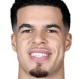

His best final NBA finish was #4 of 30, with the 2019-20 Denver Nuggets. In his 666 games for 3 teams over 12 seasons they went 321–345 (48.2%), −24 games under .500, with an average final finish of 18.3. The biggest one-season rise in his career: the Denver Nuggets went from #17 in 2017-18 to #5 in 2018-19.
Jump to: Record by opponent · Season by season · Teammate help
Compare Gary Harris with…
Suggested, same era and similar teammate help:


Final NBA finish, season by season
Title Finals Other playoffs Missed playoffs. #1 = champion; the dashed line is last place that season. Each point opens that season's final standings.
All 30 teams ranked in 2019-20, his best finish (#4)Teammate help
 Nikola Jokic9.23 seasons
Nikola Jokic9.23 seasons Paolo Banchero1.82 seasons
Paolo Banchero1.82 seasons Giannis Antetokounmpo1.01 season
Giannis Antetokounmpo1.01 season
Career
Career records (W–L, W − L, with and without) include 2026-27 games through Nov. 25, 2026; season counts and finishes are through 2025-26. Each card opens its board in the same scope. How we count.

Latest completed seasons
Season by season
Newest first; every header sorts. Final NBA finish is the team's rank among all teams that season (#1 = champion) and opens that season's standings. "Without him" uses the team-season window; the span line counts only the games between his first and last game for the team.
| 2025-26 | #21 of 30 | 32–50 39.0% | Missed playoffs | 48 of 82 | 15–33 31.2% | 17–17 50.0%span: 16–16, gap −18.8 | −18.8 | |
| 2024-25 | #15 of 30 | 41–41 50.0% | Lost 1st round 1–4 | 48 of 82 | 28–20 58.3% | 13–21 38.2%span: 13–21, gap +20.1 | +20.1 | |
| 2023-24 | #13 of 30 | 47–35 57.3% | Lost 1st round 3–4 | 54 of 82 | 35–19 64.8% | 12–16 42.9%span: 12–16, gap +22.0 | +22.0 | |
| 2022-23 | #25 of 30 | 34–48 41.5% | Missed playoffs | 48 of 82 | 22–26 45.8% | 12–22 35.3%span: 8–8, gap −4.2 | +10.5 | |
| 2021-22 | #29 of 30 | 22–60 26.8% | Missed playoffs | 61 of 82 | 16–45 26.2% | 6–15 28.6%span: 3–6, gap −7.1 | −2.3 | |
| 2020-21 | #8 of 30 | 47–25 65.3% | Lost conf semis 0–4 | 19 of 72 | 11–8 57.9% | 22–10 68.8%span: 4–5, gap +13.5 | −10.9 | |
| 2020-21 | #28 of 30 | 21–51 29.2% | Missed playoffs | 20 of 72 | 4–16 20.0% | 6–17 26.1%span: 0–1, gap +20.0 | −6.1 | |
| 2019-20 | #4 of 30 | 46–27 63.0% | Lost conf finals 1–4 | 56 of 73 | 37–19 66.1% | 9–8 52.9%span: 6–3, gap −0.6 | +13.1 | |
| 2018-19 | #5 of 30 | 54–28 65.9% | Lost conf semis 3–4 | 57 of 82 | 38–19 66.7% | 16–9 64.0%span: 16–9, gap +2.7 | +2.7 | |
| 2017-18 | #17 of 30 | 46–36 56.1% | Missed playoffs | 67 of 82 | 37–30 55.2% | 9–6 60.0%span: 9–6, gap −4.8 | −4.8 | |
| 2016-17 | #18 of 30 | 40–42 48.8% | Missed playoffs | 57 of 82 | 29–28 50.9% | 11–14 44.0%span: 8–12, gap +10.9 | +6.9 | |
| 2015-16 | #21 of 30 | 33–49 40.2% | Missed playoffs | 76 of 82 | 31–45 40.8% | 2–4 33.3%span: 2–4, gap +7.5 | +7.5 | |
| 2014-15 | #24 of 30 | 30–52 36.6% | Missed playoffs | 55 of 82 | 18–37 32.7% | 12–15 44.4%span: 11–9, gap −22.3 | −11.7 |
On/off, starts and close games
From the lineup data, 1996-97 on. On/off is net points per 100 possessions with him on the floor minus off, a different unit from the win-rate gaps. Started and off the bench are team records in those games; close games are those within 5 points in the last 5 minutes with him on the floor.
| 2025-26 | −2.0 | 0–2 0.0% | 15–31 32.6% | 3–2 60.0% | |
| 2024-25 | +5.5 | 3–0 100.0% | 25–20 55.6% | 5–2 71.4% | |
| 2023-24 | −1.5 | 19–8 70.4% | 16–11 59.3% | 10–4 71.4% | |
| 2022-23 | −3.2 | 20–22 47.6% | 2–4 33.3% | 13–7 65.0% | |
| 2021-22 | +2.4 | 4–26 13.3% | 12–19 38.7% | 10–15 40.0% | |
| 2020-21 | +9.2 | 11–8 57.9% | N/A | 4–6 40.0% | |
| 2020-21 | −9.3 | 4–15 21.1% | 0–1 0.0% | 2–2 50.0% | |
| 2019-20 | −0.1 | 37–18 67.3% | 0–1 0.0% | 21–12 63.6% | |
| 2018-19 | +2.1 | 30–18 62.5% | 8–1 88.9% | 18–10 64.3% | |
| 2017-18 | +7.6 | 36–29 55.4% | 1–1 50.0% | 17–17 50.0% | |
| 2016-17 | +1.8 | 29–27 51.8% | 0–1 0.0% | 8–16 33.3% | |
| 2015-16 | −3.8 | 31–45 40.8% | N/A | 18–25 41.9% | |
| 2014-15 | −9.7 | 1–5 16.7% | 17–32 34.7% | 2–5 28.6% |
Teammate help by season
Help this season = Teammates Score points for honors won that season by teammates who shared a game with him, with every teammate that adds to it. Only honors won in that same season count. How help works.
- 2025-26
 Milwaukee
Giannis Antetokounmpo All-Star122 g
Milwaukee
Giannis Antetokounmpo All-Star122 g
Help this season: 1 = 1 Giannis Antetokounmpo
Other teammates (no honors that season): Ryan Rollins 45 g, Bobby Portis 45 g, AJ Green 44 g, Myles Turner 44 g, Kyle Kuzma 43 g, Gary Trent Jr 39 g, Jericho Sims 38 g, Andre Jackson 30 g, Pete Nance 28 g, Kevin Porter 28 g, Cole Anthony 25 g, Thanasis Antetokounmpo 24 g, Amir Coffey 20 g, Ousmane Dieng 10 g and 5 more
- 2024-25
 OrlandoHelp this season: 0, no honored teammate
OrlandoHelp this season: 0, no honored teammate - 2023-24Orlando
Paolo Banchero All-Star153 g
 Jalen Suggs All-Def 2nd0.548 g
Jalen Suggs All-Def 2nd0.548 g
Help this season: 1.5 = 1 Paolo Banchero + 0.5 Jalen Suggs
Other teammates (no honors that season): Moritz Wagner 54 g, Franz Wagner 53 g, Cole Anthony 53 g, Joe Ingles 46 g, Anthony Black 43 g, Goga Bitadze 40 g, Jonathan Isaac 40 g, Wendell Carter Jr 39 g, Caleb Houstan 37 g, Chuma Okeke 26 g, Markelle Fultz 26 g, Admiral Schofield 16 g, Jett Howard 11 g, Trevelin Queen 2 g
- 2022-23Orlando
Paolo Banchero ROYAll-Rookie 1st0.7546 g
Help this season: 0.75 = 0.75 Paolo Banchero
Other teammates (no honors that season): Franz Wagner 47 g, Markelle Fultz 43 g, Moritz Wagner 42 g, Cole Anthony 41 g, Wendell Carter Jr 41 g, Jalen Suggs 36 g, Bol Bol 36 g, Caleb Houstan 28 g, Mo Bamba 17 g, Terrence Ross 15 g, Admiral Schofield 15 g, Goga Bitadze 12 g, RJ Hampton 10 g, Jonathan Isaac 10 g and 4 more
- 2021-22Orlando
 Franz Wagner All-Rookie 1st0.2561 g
Franz Wagner All-Rookie 1st0.2561 g
Help this season: 0.25 = 0.25 Franz Wagner
Other teammates (no honors that season): Chuma Okeke 53 g, Wendell Carter Jr 51 g, Mo Bamba 51 g, Terrence Ross 49 g, Cole Anthony 48 g, RJ Hampton 44 g, Moritz Wagner 42 g, Jalen Suggs 38 g, Admiral Schofield 28 g, Ignas Brazdeikis 24 g, Robin Lopez 23 g, Mychal Mulder 12 g, Tim Frazier 10 g, Freddie Gillespie 9 g and 4 more
- 2020-21
 Denver
Nikola Jokic MVPAll-NBA 1stAll-Star1119 g
Denver
Nikola Jokic MVPAll-NBA 1stAll-Star1119 g
Help this season: 11 = 11 Nikola Jokic
Other teammates (no honors that season): Monte Morris 19 g, Will Barton 18 g, Paul Millsap 18 g, Facundo Campazzo 18 g, Jamal Murray 18 g, JaMychal Green 15 g, PJ Dozier 15 g, RJ Hampton 13 g, Isaiah Hartenstein 12 g, Michael Porter 11 g, Zeke Nnaji 10 g, Markus Howard 9 g, Bol Bol 8 g, Vlatko Cancar 8 g
- 2020-21OrlandoHelp this season: 0, no honored teammate
- 2019-20Denver
Nikola Jokic All-NBA 2ndAll-Star456 g
Help this season: 4 = 4 Nikola Jokic
Other teammates (no honors that season): Monte Morris 56 g, Jerami Grant 55 g, Jamal Murray 52 g, Will Barton 49 g, Mason Plumlee 47 g, Paul Millsap 43 g, Torrey Craig 41 g, Michael Porter 40 g, Malik Beasley 32 g, Juan Hernangomez 26 g, PJ Dozier 14 g, Vlatko Cancar 11 g, Jarred Vanderbilt 6 g, Noah Vonleh 4 g and 3 more
- 2018-19Denver
Nikola Jokic All-NBA 1stAll-Star555 g
Help this season: 5 = 5 Nikola Jokic
Other teammates (no honors that season): Mason Plumlee 57 g, Monte Morris 57 g, Paul Millsap 56 g, Malik Beasley 56 g, Jamal Murray 53 g, Torrey Craig 50 g, Juan Hernangomez 46 g, Trey Lyles 40 g, Will Barton 33 g, Jarred Vanderbilt 15 g, Tyler Lydon 15 g, Isaiah Thomas 11 g, Brandon Goodwin 6 g, Thomas Welsh 6 g and 1 more
- 2017-18DenverHelp this season: 0, no honored teammate
- 2016-17Denver
 Jamal Murray All-Rookie 2nd0.12557 g
Jamal Murray All-Rookie 2nd0.12557 g
Help this season: 0.125 = 0.125 Jamal Murray
Other teammates (no honors that season): Nikola Jokic 52 g, Jameer Nelson 51 g, Wilson Chandler 49 g, Will Barton 43 g, Danilo Gallinari 43 g, Juan Hernangomez 42 g, Kenneth Faried 38 g, Emmanuel Mudiay 32 g, Darrell Arthur 27 g, Mason Plumlee 26 g, Jusuf Nurkic 21 g, Mike Miller 16 g, Malik Beasley 14 g, Johnny O'Bryant 7 g and 3 more
- 2015-16Denver
Nikola Jokic All-Rookie 1st0.2575 g
 Emmanuel Mudiay All-Rookie 2nd0.12562 g
Emmanuel Mudiay All-Rookie 2nd0.12562 g
Help this season: 0.375 = 0.25 Nikola Jokic + 0.125 Emmanuel Mudiay
Other teammates (no honors that season): Will Barton 76 g, Darrell Arthur 64 g, Kenneth Faried 62 g, Joffrey Lauvergne 54 g, Randy Foye 48 g, Danilo Gallinari 47 g, Mike Miller 41 g, Jameer Nelson 33 g, Jusuf Nurkic 32 g, DJ Augustin 28 g, JaKarr Sampson 26 g, Kostas Papanikolaou 24 g, Axel Toupane 21 g, JJ Hickson 17 g and 2 more
- 2014-15Denver
 Jusuf Nurkic All-Rookie 2nd0.12540 g
Jusuf Nurkic All-Rookie 2nd0.12540 g
Help this season: 0.125 = 0.125 Jusuf Nurkic
Other teammates (no honors that season): JJ Hickson 54 g, Wilson Chandler 51 g, Ty Lawson 50 g, Kenneth Faried 48 g, Erick Green 42 g, Danilo Gallinari 39 g, Darrell Arthur 36 g, Randy Foye 32 g, Jameer Nelson 28 g, Will Barton 28 g, Arron Afflalo 26 g, Joffrey Lauvergne 24 g, Alonzo Gee 22 g, Timofey Mozgov 16 g and 4 more
Record against each opponent
- Best regular-season record against one franchise: 14–7 (66.7%) against the Chicago Bulls in 21 games.
- Toughest regular-season record against one franchise: 6–18 (25.0%) against the Philadelphia 76ers in 24 games.
Regular season, through 2025-26 (2026-27 games not included): 666 games, 321–345, against 30 franchises.
Grouped by franchise (named as today); game lists keep each team's name that season. Filters and the tab are kept in the URL, so a filtered view can be shared.
| Games list | |||||||
|---|---|---|---|---|---|---|---|
| 28 | 11–17 | 39.3% | −6 | 1–0 (2–0 in games) | 2014-15 to 2025-26 | ||
| 27 | 17–10 | 63.0% | +7 | N/A | 2014-15 to 2025-26 | ||
| 27 | 12–15 | 44.4% | −3 | 0–1 (1–4 in games) | 2014-15 to 2025-26 | ||
| 26 | 15–11 | 57.7% | +4 | N/A | 2014-15 to 2025-26 | ||
| 26 | 16–10 | 61.5% | +6 | N/A | 2014-15 to 2025-26 | ||
| 26 | 15–11 | 57.7% | +4 | N/A | 2014-15 to 2024-25 | ||
| 25 | 13–12 | 52.0% | +1 | N/A | 2014-15 to 2025-26 | ||
| 25 | 9–16 | 36.0% | −7 | N/A | 2014-15 to 2025-26 | ||
| 25 | 8–17 | 32.0% | −9 | N/A | 2014-15 to 2024-25 | ||
| 25 | 8–17 | 32.0% | −9 | N/A | 2014-15 to 2025-26 | ||
| 25 | 16–9 | 64.0% | +7 | N/A | 2014-15 to 2024-25 | ||
| 25 | 13–12 | 52.0% | +1 | N/A | 2014-15 to 2025-26 | ||
| 25 | 14–11 | 56.0% | +3 | N/A | 2014-15 to 2025-26 | ||
| 24 | 15–9 | 62.5% | +6 | N/A | 2014-15 to 2025-26 | ||
| 24 | 6–18 | 25.0% | −12 | N/A | 2014-15 to 2025-26 | ||
| 24 | 14–10 | 58.3% | +4 | 0–1 (3–4 in games) | 2014-15 to 2025-26 | ||
| 24 | 9–15 | 37.5% | −6 | 1–0 (4–3 in games) | 2014-15 to 2025-26 | ||
| 23 | 8–15 | 34.8% | −7 | N/A | 2014-15 to 2025-26 | ||
| 22 | 9–13 | 40.9% | −4 | 0–1 (1–4 in games) | 2014-15 to 2025-26 | ||
| 22 | 11–11 | 50.0% | 0 | N/A | 2014-15 to 2025-26 | ||
| 22 | 7–15 | 31.8% | −8 | 1–0 (4–3 in games) | 2014-15 to 2024-25 | ||
| 21 | 14–7 | 66.7% | +7 | N/A | 2014-15 to 2025-26 | ||
| 20 | 8–12 | 40.0% | −4 | 0–1 (2–4 in games) | 2015-16 to 2025-26 | ||
| 20 | 13–7 | 65.0% | +6 | N/A | 2014-15 to 2025-26 | ||
| 19 | 8–11 | 42.1% | −3 | N/A | 2014-15 to 2025-26 | ||
| 18 | 7–11 | 38.9% | −4 | N/A | 2014-15 to 2025-26 | ||
| 18 | 8–10 | 44.4% | −2 | N/A | 2014-15 to 2024-25 | ||
| 15 | 8–7 | 53.3% | +1 | N/A | 2014-15 to 2025-26 | ||
| 9 | 7–2 | 77.8% | +5 | N/A | 2014-15 to 2025-26 | ||
| 6 | 2–4 | 33.3% | −2 | N/A | 2021-22 to 2025-26 |
Rows add up to his career record in his games. A playoff series counts when he played in it; early round-robin games show as games only. How we count.
Playoffs, with and without him
| 2024-25 | Lost in the first round 1–4 to | #15 of 30 | 5 of 5 | 1–4 20.0% | N/A | N/A | |
| 2023-24 | Lost in the first round 3–4 to | #13 of 30 | 6 of 7 | 2–4 33.3% | 1–0 100.0% | −66.7 | |
| 2019-20 | Lost in the conference finals 1–4 to | #4 of 30 | 14 of 19 | 7–7 50.0% | 2–3 40.0% | +10.0 | |
| 2018-19 | Lost in the conference semifinals 3–4 to | #5 of 30 | 14 of 14 | 7–7 50.0% | N/A | N/A |
Arrival and departure
Team wins per 82 games the season before he arrived vs his first season there, and his last season vs the season after he left. He leaves a team only when his next season with games is for another team (or he never plays again); whole seasons he missed and came back from are one "Missed" row with the team's record without him. Per 82 so short seasons compare fairly. These are team records, not a measure of what he did.
| Arrived | 2025-26 | 2024-25: 48–34 48.0 per 82 | 2025-26: 32–50 32.0 per 82 | −16.0 wins | |
| Left | after 2024-25 | 2024-25: 41–41 41.0 per 82 | 2025-26: 45–37 45.0 per 82 without him | +4.0 wins | |
| Left | after 2020-21 | 2020-21: 47–25 53.5 per 82 | 2021-22: 48–34 48.0 per 82 without him | −5.5 wins | |
| Arrived | 2020-21 | 2019-20: 33–40 37.1 per 82 | 2020-21: 21–51 23.9 per 82 | −13.2 wins | |
| Debut | 2014-15 | 2013-14: 36–46 36.0 per 82 | 2014-15: 30–52 30.0 per 82 | −6.0 wins |
Seasons split between teams
Each team's record before his first game for it, inside his window (games with and without him) and after his last game, in the seasons he played for two or more teams.
Best duos
Team record in regular-season games both played, top 10 by win %, at least 50 games together.
 Torrey Craig
78–40 66.1%
Torrey Craig
78–40 66.1% Jerami Grant
36–19 65.5%
Jerami Grant
36–19 65.5% Monte Morris
88–47 65.2%
Monte Morris
88–47 65.2%
Michael Porter 33–18 64.7% Jonathan Isaac
58–33 63.7%
Jonathan Isaac
58–33 63.7%- Paul Millsap 90–52 63.4%
 Anthony Black
55–34 61.8%
Anthony Black
55–34 61.8% Mason Plumlee
114–75 60.3%
Mason Plumlee
114–75 60.3% Malik Beasley
93–62 60.0%
Malik Beasley
93–62 60.0%- Jamal Murray
147–99 59.8%
With and without his teammates
His 12 teammates with the most regular-season games together. "Together" is the team's record in the games both played for it; "Without him" is the team's record in the games Gary Harris played for that team while the teammate was on it (between the teammate's first and last game for the team, the appearance span) and the teammate did not play. Fewer than 20 games without him: no gap. Games through Nov. 25, 2026. How we count.
- Nikola JokicDenver 2015-16 to 2020-21
- Together
- 176–141 55.5%
- Without him
- 7–8 46.7%
- Gap
- Too few games without him
 Will BartonDenver 2014-15 to 2020-21
Will BartonDenver 2014-15 to 2020-21- Together
- 167–146 53.4%
- Without him
- 22–18 55.0%
- Gap
- 1.6 points higher
- Jamal MurrayDenver 2016-17 to 2020-21
- Together
- 147–99 59.8%
- Without him
- 5–5 50.0%
- Gap
- Too few games without him
 Cole AnthonyOrlando 2020-21 to 2024-25; Milwaukee 2025-26
Cole AnthonyOrlando 2020-21 to 2024-25; Milwaukee 2025-26- Together
- 104–121 46.2%
- Without him
- 13–28 31.7%
- Gap
- 14.5 points lower
- Franz WagnerOrlando 2021-22 to 2024-25
- Together
- 98–106 48.0%
- Without him
- 2–3 40.0%
- Gap
- Too few games without him
- Mason PlumleeDenver 2016-17 to 2019-20
- Together
- 114–75 60.3%
- Without him
- 12–5 70.6%
- Gap
- Too few games without him
 Wendell Carter JrOrlando 2020-21 to 2024-25
Wendell Carter JrOrlando 2020-21 to 2024-25- Together
- 80–102 44.0%
- Without him
- 25–23 52.1%
- Gap
- 8.1 points higher
 Kenneth FariedDenver 2014-15 to 2017-18
Kenneth FariedDenver 2014-15 to 2017-18- Together
- 76–101 42.9%
- Without him
- 26–30 46.4%
- Gap
- 3.5 points higher
 Moritz WagnerOrlando 2020-21 to 2024-25
Moritz WagnerOrlando 2020-21 to 2024-25- Together
- 78–88 47.0%
- Without him
- 8–15 34.8%
- Gap
- 12.2 points lower
 Wilson ChandlerDenver 2014-15; Denver 2016-17 to 2017-18
Wilson ChandlerDenver 2014-15; Denver 2016-17 to 2017-18- Together
- 75–85 46.9%
- Without him
- 9–10 47.4%
- Gap
- Too few games without him
- Malik BeasleyDenver 2016-17 to 2019-20
- Together
- 93–62 60.0%
- Without him
- 39–27 59.1%
- Gap
- 0.9 points lower
 Darrell ArthurDenver 2014-15 to 2017-18
Darrell ArthurDenver 2014-15 to 2017-18- Together
- 62–83 42.8%
- Without him
- 46–44 51.1%
- Gap
- 8.4 points higher